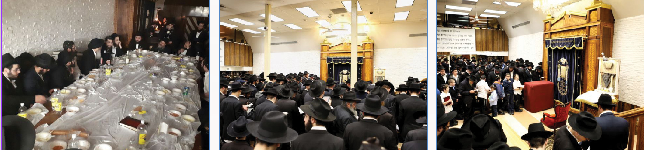

כ”ב שבט במניין של הרבי מלך המשיח | כ”ב שבט במניין של הרבי מלך המשיח | התוועדות ע
לקראת “כינוס השלוחות העולמי”, החל השבוע בסמיכות ליארצייט–הילולא של הרבנית נ”ע, החלו להגיע ל–770 שלוחות רבות מכל העולם כולו, וכן “סתם” נשי ובנות ישראל (אשר בשכרן נגאלים מהגלות האחרונה, כדברי כ”ק אד”ש הידועים) המגיעות כבכל שנה לרגל כ”ב שבט, יום ההילולא של הרבנית הצדקנית נ”ע.

לקראת “כינוס השלוחות העולמי”, החל השבוע בסמיכות ליארצייט–הילולא של הרבנית נ”ע, החלו להגיע ל–770 שלוחות רבות מכל העולם כולו, וכן “סתם” נשי ובנות ישראל (אשר בשכרן נגאלים מהגלות האחרונה, כדברי כ”ק אד”ש הידועים) המגיעות כבכל שנה לרגל כ”ב שבט, יום ההילולא של הרבנית הצדקנית נ”ע.
לאחרי מנחה התקיים השיעור היומי בדבר–מלכות השבועי במזרח 770. השיעור נמסר ע”י הת’ אליעזר שי’ פייגין.
במהלך אחר הצהריים בקרו מקורבים כמידי יום ראשון, כשחלקם מתלווים לבחורים שעורכים להם סיור במקום מטעם ה”בית חב”ד” הפועל ב–770.
יום שני, כ’ שבט
הבוקר שיעור בשורת הגאולה החל בשעה 9:22.
לקריה”ת הוציאו הספר תורה של הטנקיסטים. לראשון ושני עלו חתני בר מצוה. לאחר “שלישי” נערכו כרגיל “מי שבירך’ס”.
הים בצהריים התקיים סדר רמב”ם, לאחר הפסקה קצרה.
בימים האחרונים, בשונה משבועות קודמים, 770 הומה מלא מבקרים ותיירים שהגיעו ל”תלפיות” - בית רבינו שבבבל, “מקום המקדש גופיה דלעתיד”. וידי הבחורים הממונים על הסיורים במקום - מלאות עבודה רבה. כמובן שכל התיירים והמבקרים שנערך להם סיור במקום זוכים להתקשר לכ”ק אד”ש ע”י הכתיבה אליו ולבקש את ברכתו הק’.
לאחר הסדרים מתיישבים רוב התמימים ללימוד ליקוטי שיחות מתורתו של כ”ק אד”ש, בחשק ובחיות.
בשעה 11:30 נפתחת ההתוועדות השבועית לחיזוק האמונה בכ”ק אד”ש ובתקנותיו בעניני גאולה ומשיח. ההתוועדות נפתחה בלימוד קטעים משיחות אד”ש בעניני משיח וגאולה מתוך הקונטרס הנפלא “יחי המלך” השבועי. בהתוועדות השבוע השתתפו הרב יהודה שי’ פרידמן, ור’ זלמן (ז’אמקע) שי’ ברוכשטט. האחרון, דיבר חזק על הפצת משיח בסביבה הקרובה והרחוקה. ואף תיבל את דבריו בכמה סיפורים מפעילותו בשטח זה, שלדעתו צריך חיזוק. בין היתר הוא סיפר כך: “לפני כשבוע, הלכתי על השדרה באיסטערן פארקווי, ופתאום פגשתי ביהודי שאינו נראה כשומר תומ”צ. הצעתי לו להניח תפילין לאחרי שהחלפנו מילות נימוסין קצרות. הלה שכנראה התבייש השיב לי שאין לו זמן כעת והוא ממהר וכו’. שאלתי אותו אתה מכיר את הבנין כאן הגדול שהרבה יהודים נכנסים אליו (770)? והוא משיב: “לא”. נפרדנו לא לפני שלקחתי ממנו את מס’ הטלפון שלו. בהמשך שלחתי לו הודעה, אבל הוא לא חזר אלי.
“לאחר כמה ימים נסעתי ברכבת התחתית, ושוב נפגשנו. אני ואותו יהודי. אמרתי לו, תקשיב. זה סימן משמיים להיפגש כך בתוך כזה קצר. והתחלתי לדבר איתו על תומ”צ, והזמנתי אותו אליי לשבת. אותו יהודי שכאמור לא נראה כשומר תומ”צ, ענה לי “השבת אני לא יכול. אולי שבת אחרי זה, נראה”. תוך כדי אני שואל אותו האם קיבל את ההודעה ששלחתי לו, והוא משיב לי בשלילה. לקחתי ממנו שוב את מס’ הטלפון, והבטחנו לעמוד בקשר. הוא סיפר לי בדיוק איפה הוא מתגורר, באיזה בנין. וככה הסתיימה השיחה בינינו.
“אני מכיר את אחד השכנים שלו, הוא חבדני”ק” אומר הרב ברוכשטט, “ניגשתי אליו ושאלתי האם הוא מכיר את היהודי הנ”ל. השכן ענה לי שהוא כלל לא מכירו, “מה הוא יהודי?” הייתה התגובה.. “היהודי לא היה מודע שהוא בתפקיד”. סיים הרב ברוכשטט: “אנחנו יושבי בית רבינו שזכינו, צריכים להעביר את הזכות הזו הלאה, לא יתכן שיישב כאן יהודי מספר “בלאקים” מפה, והוא לא מודע לעובדה שיש כאן בית מיוחד, ביתו של נשיא–הדור”. הוא מסיים בהכרזה ש”צריך שהתוועדות הבאה כל הבחורים שיושבים כאן כעת, יביאו איתם עוד יהודי מבחוץ להתוועדות בשבוע הבא, כמובן רק ב”אם ח”ו משיח יתעכב”. בהמשך מצטרף הרב קעניג, שליח באלקנה ארה”ק להתוועדות, וההתוועדות נמשכת עמוק אל תוך הלילה עד לשעות הקטנות.
יום שלישי, כ”א שבט
היום בשיעור בשורת הגאולה לפני שחרית, הגיעו לאות בה מועתק קטעים משיחת הדבר–מלכות השבועי, אודות היעוד הגאולתי “וכתתו חרבותם לאיתים”. ופעולתו של מלך המשיח בעולם.
השיעור דבר מלכות הקבוע שלאחרי תפילת מנחה התקיים כרגיל, ונמסר כהימים האחרונים ע”י הת’ אליעזר שי’ פייגין.
כמידי יום שלישי התקיים “ראלי” לחיילי צבאות ה’ בעזרת–נשים שבצד איסטערן פארקוויי.
בשעת השקיעה, נראו כו”כ המדליקים נרות נשמה במקום שהוקצה לכך בחלק המערבי של לובי הכניסה של הזאל, לע”נ הרבנית הצדקנית מרת חי’ מושקא נ”ע.
לקראת תפילת מעריב, הכינו “ועד המסדר” את הריבוע המקיף את העמוד של הש”ץ, בה יעבור כ”ק אד”ש לפני התיבה כמנהגו הק’, לרגל היארצייט של רעייתו הרבנית הצדקנית נ”ע.
לקראת התפילה פתח הקהל בשירת “יחי” אדירה לקבלת פני משיח צדקנו, ובשעה 6:45 בדיוק החלה התפילה. כולנו מצפים לשמוע ולראות. את אותו ה”והוא רחום” הכל–כך מוכר. לעת עתה עדיין לא זכינו.
הדומיה ששוררת כעת בקהל הסמוך למקום הש”ץ, עת כולם מנסים להאזין לקולו הק’ של כ”ק אד”ש… אולי עכשיו, סוף סוף, נזכה לשמוע באזני בשר…
לאחר הסדרים, איך שהסתיים סדר חסידות ערב התקיים סדר ליקוטי שיחות ענק, עם פארבייסען בשפע לקבלת פני משיח. באירגון התמימים מענדי באשה, חיים חלילי, דוד אקוקה ולוי בן אגו.
בשעה 10:30 לערך התקיימה התוועדות חסידים בקדמת–770, לרגל יום הולדת של חברנו לספסל–הלימודים הת’ יהוסף חיים שי’ סעיד, ולרגל כ”ב שבט, ביחד עם הרה”ח ר’ דוד שי’ נחשון. הרב נחשון שופע סיפורים רבים, וכן מספר על מענות רבים להם זכה מכ”ק אד”ש (ראה מסגרת).
יום רביעי, כ”ב שבט
יום היארצייט–הילולא ה–30 של הרבנית הצדקנית מרת חי’ מושקא נ”ע
בשעה 7:15 בבוקר עשרות תמימים, קמו והתישבו לסדר “השכם”, ללימוד הדבר מלכות עם כיבוד כיד המלך. סדר זה נועד לרגל כ”ב שבט - לעילוי נשמת הרבנית, בקשר עם זה נערכה הגרלת–ענק על 22 ארוחות–בוקר בין כל המשתתפים, וכן לרפואת הת’ רפאל שמואל שי’ שדמי, שיתעורר ויחלים במהרה. כל הנ”ל נוהל בהצלחה ע”י הת’ יענקי בלום.
בשעה 1:00 נמסר ה”שיעור כללי” ע”י ראש הישיבה הרב שניאור זלמן שי’ לאבקובסקי במערב 770. ראש הישיבה שליט”א פלפל בנושא אילן וכותל רעוע שהזיקו בדרך נפילתן וייסד את שיטת הרמב”ם בזה. היה ממש נפלא.
בצהריים סדר רמב”ם התקיים כרגיל, עם אוכל בשפע.
לאחר הסדרים, החלו כמה מהתמימים לסדר את הזאל להתוועדות המרכזית של כ”ב שבט ב–770.
בשעה 9:30 לערך החלה ההתוועדות המרכזית לכבוד כ”ב שבט - 30 שנה מהתקופה החדשה.
ההתוועדות נפתחה בהקרנת מראות–קודש משיחת כ”ק אד”ש בקשר עם כ”ב שבט. לאחרי זה פתח המנחה ר’ שמואל שי’ סאמיולס על חשיבותו של היום כמפורש בקונטרס “בך יברך ישראל”, ובשיחותיו של כ”ק אד”ש. ש”ביום זה” למעשה, החלה תקופה חדשה בנוגע לגאולה.
לאחר מכן הזמין המנחה את המד”א הרב אהרן יעקב שי’ שוויי, שעורר על היראת שמים, ובפרט בחשיבות ההליכה עם ב’ מקיפים ועם הכובע החסידי, דבר שנוגע ליראת שמים של כאו”א לאחר בר מצווה.
לאחריו הוזמן המד”א הרב יוסף ישעי’ שי’ ברוין, שעמד בדבריו על משמעותה של ה”תקופה חדשה” ודרישת אד”ש מכל יהודי שיהיה חדור בתחושת הגאולה ועד כדי לחיות בהתאם למעמד ומצב הגאולה. לאחר אתנחתא עם ניגונים הוזמן ר’ דוד שי’ נחשון, שפנה אל הקהל בעברית, ועורר אותם אודות הדבר–מלכות השבועי, ש”פ משפטים תשנ”ב, אודות דיבורו המפורש של כ”ק אד”ש על עצמו, על כך ש”מלך המשיח” החל לפעול בעולם והוא אכן נשיא הדור, וכפי שגילה לנו אד”ש בשיחות אד”ר בתשנ”ב ש”מנחם שמו”. “מה עוד, אלו מילים צריך כ”ק אד”ש להגיד על עצמו בכדי שנקלוט את המסר?” את דבריו הוא חותם בצרור סיפורים אודות הרבנית, שהיא שפעלה אצל כ”ק אד”ש לקחת את עול הנשיאות על עצמו בטענה “שבאם לא כל העבודה של אבא עלולה לרדת לטמיון ח”ו”. לאחריו נפתחות ב–770 התוועדויות רבות בקשר עם מעלת היום וענינו. תוך כדי מוזמן אל המיקרופון הסופר סת”ם הרב קלאפמאן שי’. ומספר באנגלית לקהל על הקירובים להם זכה מאת הרבנית והלימוד מדרכיה לחיינו אנו. בסיום החלק ה”רשמי”, באופן טבעי ומתבקש, התיישבו כולם קבוצות קבוצות להתוועדויות קטנות שנמשכו עד עלות השחר.
יום חמישי, כ”ג שבט
לאחרי שחרית התקיימו שתי חגיגות בר–מצווה בשולחן המזרחי, לתמימים שהגיעו לחגוג את יומם הגדול במחיצת כ”ק אד”ש. הראשון הוא הת’ מענדל’ה ואקנין שי’ והשני הת’ מענדל סגל בנו של השליח הרה”ח אלי’ סגל, שליח באזרביג’אן.
לאחרי מנחה התקיים השיעור היומי בדבר מלכות השבועי עם הת’ יוסף יצחק שי’ וויצהנדלר.
בשעות אחר הצהריים התקיים “אפשערניש” למשפחת טעוול, במזרח 770, עם פארבייסען בשפע.
לאחר הסדרים, בשעה רבע לעשר, התקיים השיעור השבועי בעניני גאולה–ומשיח לעיון, את השיעור השבוע מסר הרה”ת הרב שניאור זלמן הרצל שי’, מחבר הספר ‘הקץ’ ועוד. השיעור היה בביאור קונטרס “בך יברך ישראל” שהוציא כ”ק אד”ש לכבוד כ”ב שבט תשנ”ב. יצויין שרבות מתלמידי התמימים השתתפו בשיעור המיוחד. במשך שעה ארוכה העמיקו המשתתפים ביחד עם מוסר השיעור בקונטרס הנ”ל וכן במשמעות ה’תקופה החדשה’ שהחלה מאז כ”ב שבט, ומשמעותה בחיינו אנו.
נקודה מעניינת מהשיעור: בחסידות מובא שנתאווה הקב”ה להיות לו דירה בתחתונים, וענין זה מוסבר בהרחבה. בקונטרס הנ”ל מוסיף כ”ק אד”ש נקודה נוספת: נתאווה הבורא ית’ לדירה נאה. הוספה זו, הינה מצד הנבראים, בנוסף על עצם קיום התומ”צ (שהם הדירה עצמה) אופן קיומם נוגע גם לשלימות הכוונה. הם צריכים להיות באופן נאה, היינו שהמצוות עצמם יהיו מאירים, שזו עבודתנו כיום וסיים המרצה: “שכבר מספיק שנים” מתעסקים בעניין של “דירה נאה”.
במהלך הלילה התקיימה התוועדות וסעודת בר מצוה ענקית במזרח 770 לת’ מנחם מענדל שי’ וואקנין, בהשתתפות אנ”ש והתמימים. יצויין שהרבה זמן לא נראתה שמחה שכזו ב–770.
יום שישי, כ”ד שבט
היום בבוקר שמעתי את שיחת כ”ק אד”ש בליל חמישי בשבוע ש”פ תשנ”ב שם מדבר כ”ק אד”ש אודות הכרזת נשיאי המעצמות לצימצום ההקצאות לכלי נשק והפנייתם לפיתוח הכלכלה של בני המדינה. אשר זה “סימן ברור” כלשונו של כ”ק אד”ש להתחלת קיום הייעוד הגאולתי “וכתתו חרבותם לאיתים”. והרבי לא עוצר. זה מ”פעולתו של משיח”. ה”נשיא שבדור”.
לאחרי שחרית יצאנו למבצעים, לפגוש ביהודים לעורר ולהתעורר אודות בשורת כ”ק אד”ש והדרישה לחיות כפי המתאים לתקופה המיוחדת בה אנו נמצאים. פגשנו ביהודי ממוצא רוסי שבקושי יודע שפה חוץ מרוסית. הבאתי לו עלון שבועי ברוסית שמסביר את העניין הנ”ל, ולאחר שעיין בו לכמה דקות ליד הדוכן אמר לי “נדבר על זה הלילה בבית. זה נשמע רציני”
בעשרה לשש החלה קבלת שבת. רבים מהתמימים מספיקים להגיע בשעה היעודה לתפילה. לפני התיבה עבר ר’ שניאור זלמן שי’ שאנאוויטש. ב”לכה דודי” החל הש”ץ לשיר פרזות תשב ירושלים, ו”בלא תבושי”, הוחלפה המנגינה למנגינה טהורה של “יחי”, שהושרה בהתלהבות אל מול פני הקודש כ–6 דקות. התפילה הסתיימה בהכרזות ר’ זלמן שי’ ליפסקער אודות ה”שלום–זכר’ס”, וכן על אמירת תהילים.
מיד לאחר התפילה התיישבנו לסדר חסידות, למדתי את ה”הדרן” המיוחד שהוציא כ”ק אד”ש לכ”ב שבט תשנ”ב, רבים מהתמימים לומדים מתורתו של כ”ק אד”ש על פרשת השבוע, מי מאמר ומי שיחה מליקוטי שיחות השבועי, וכמובן אחרון חביב - שיחת הדבר–מלכות השבועי בה מורה כ”ק אד”ש אודות פעולתו שלו על העולם ואומותיו, בתור משיח. העיון בשיחה מופלאה זו, מתחזק לנוכח העובדה שעל השולחנות מופיעות חוברות ה”מדקדקים” על השיחה, על כל המדורים המיוחדים שבחוברת העוזרים להתעמק ו”לחיות” עם השיחה כדבעי.
יום ש”ק פ’ משפטים - שקלים -
כ”ה שבט מבה”ח אדר
לאחר סדר חסידות החל המנין לאמירת תהילים בשעה שמונה וחצי. לפני התיבה עבר ר’ יוסף ברוך שי’ שפילמאן. כרגיל ישבו החיילי צבאות ה’ מתחת להעזרת נשים, ואמרו תהילים פסוק בפסוק, ובקול רם. אמירת תהילים הסתיימה בשעה 10:00.
שחרית החל בעשר וחצי. לפני התיבה עבר ר’ מנחם מענדל שי’ רייצעס. לקריאת התורה הוציאו את ס”ת לקבלת פני משיח צדקנו, והס”ת הקטן של כ”ק אד”ש.
לאחר הכרזת זמן המולד ע”י הגבאי, פתח הש”ץ של מוסף ר’ שמעון שי’ הערץ בברכת החודש. לאח”ז קרא הגבאי ר’ יוסף שי’ לאש את הפתגם היומי בלוח היום יום. בתפילת מוסף עבר הש”ץ הנ”ל. בסיום התפילה ר’ נחום קפלינסקי שי’ קרא קטע בגאומ”ש וכן הכריז אודות התוועדות כ”ק אד”ש בשעה 1:30.
שבת אחרי שבת, חיילי בית דוד אינם מתעייפים ומסדרים במרץ את הספסלים להתוועדות הקודש כאילו זוהי רק הפעם הראשונה שהם עושים זאת.
התוועדות קודש
שבת מברכים אדר. התכונה לקראת ההתוועדות היא מלאה. גם בעזרת הנשים היציע מלא. רבות מהשלוחות שהגיעו הנה לקראת כינוס השלוחים העולמי, מצפות לשמוע ובאו לתבוע את ההתגלות. אחת עשרים וחמש החל הקהל בשירת יחי אדוננו. בשעה 1:33 הגיע הרב מנחם גערליצקי שי’ ומזג את היין לגביעו הק’ של כ”ק אד”ש. מחכים לשמוע את קולו הק’. נזכרתי בשיחת כ”ק אד”ש בחמישה עשר בשבט תשל”ט, אודות הבן שמחפש את אביו. “יום ראשון הוא חיפש, יום שני, יום שלישי והוא לא מוצא”. התמימים בשונה מאותו בן שבמשל, אינם נחים לרגע, חיים במלוא המשמעות עם כ”ק אד”ש ומצפים להתגלותו המיידית, מתוועדים ומנגנים, לומדים ומתפללים, חיים ופועלים. הכל למען ההתגלות הצפויה להתרחש ברגע הקרוב.
תפילת מנחה החלה בשעה 4:50. לפני התיבה עבר ר’ נחום קפלינסקי שי’. הוציאו הספר תורה לקבלת פני משיח צדקנו. בקריה”ת, לראשון ושני עלו חתני בר מצוה. לאחר מנחה, התקיים כמידי שבת, סדר ניגונים וחזרת דא”ח במערב הזאל הגדול.
לאחרי מעריב, הוקרנו ב–770 מראות קודש מכ”ק אד”ש בשנים הקודמות.
במהלך הלילה, לאחר “סדר נגלה” מתקיימות מספר התוועדויות ב–770 התוועדויות וחגיגת בר מצווה לתמימים ארי שיפמן מביתר עילית והת’ משה זלמן שניארסון בנו של הרה”ח ר’ דוד שניאורסון מאיתמר, ארה”ק.
כמו”כ מתקיימת התוועדות יום הולדת לת’ השליח מ”מ מזרחי, מקבוצה תשע”ז, שהגיע לקראת יום הולדתו לכ”ק אד”ש. בהמשך הלילה מתקיימת התוועדות מיוחדת עם המשפיע הרה”ח ר’ יוסף יצחק אופן שליט”א.
• • •
אבא, זהו סיכומו של שבוע ב–770. בית חיינו. ביתו של משיח רוח אפינו. הוא אשר שמשנה את סדרי העולם ומחשבת ראשי אומותיו, לא רק מכניס לשכלם אלא משנה אותו להבין ולהתנהג בהתאם להוראות התורה. הוא אשר דואג לכל יהודי באשר הוא. הוא ה”לב” של כל חיי היהדות והיהודים (תרתי משמע). הוא אשר יוליכנו לקראת הגאולה אליה מחכים אנו ואבותינו אלפי שנים.
אבל לא רק, הוא אשר קירבנו והפך אותנו לחסידיו ונאמניו. הוא שרוממנו מכל לשון, אומה ומסגרת. הוא אשר הראה לנו את הדרך. ה”דרך ישרה” לגאולה. ב–770 מתוועדים על התפקיד והזכות הגדולה.
במוצאי שבת האחרון התוועד איתנו המשפיע הרב יי”צ אופן שי’. לקראת סוף ההתוועדות הגיע בחור בריסקאי מ”איסט–סייד” במנהטן. הוא לקח “לחיים” והחל להקשות על חב”ד, הוא הצהיר על עצמו “אני כעת בשלבי “חיפוש והכרת האמת”… בין היתר הוא הקשה “אדה”ז הלך למעזריטש רק לאחר שהגיע לשלימות בלימוד, ואילו אתם..” לא משנה כעת מה ענו לקנטרן ואיך השיבו כגמולו. הנקודה היא, שאז קלטתי מהי המשמעות הפשוטה של חיי חסיד. אצל חסיד השאלה אינה מתחילה. הוא אינו מונח ברדיפה אחר “שלימות”, וכל מיני עניינים כיו”ב. ברור לו שחייו אינם אלא כענף היונק מהאילן הוא רבו. הענין הוא כך. בלעדי התקשרות עם כ”ק אדמו”ר מלך המשיח שליט”א, לא ש”חסר פרט” או ענין, כי–אם “אין לו חיים”. חיינו ומקור נשימתנו היא כ”ק אד”ש וקיום הוראותיו להבאת הגאולה האמיתית והשלימה. ובלעדי זה “חייא מנין”.
זה חיינו והם “עשירים” בדוגמאות למכביר. ויה”ר שתיכף ומי”ד יזכו כל אחינו בני ישראל לעשירות מופלגה הנובעת מתקיעת הדעת וההתקשרות בחוזק בשליח ה’, מקור הטוב, או אז גם העולם ואומותיו יכירו במציאות הא–ל, ולא יהיה עסק כל העולם אלא ב”לדעת” את ה’ בלבד, בהתגלות מלכנו משיחנו, ולמטה מעשרה טפחים.
בתקווה שניפגש ב–770 המחובר לבית המקדש השלישי תיכף ומיד.
יחי אדוננו מורנו ורבינו מלך המשיח לעולם ועד
דוידי
ארצות החיים - 770 - בית משיח